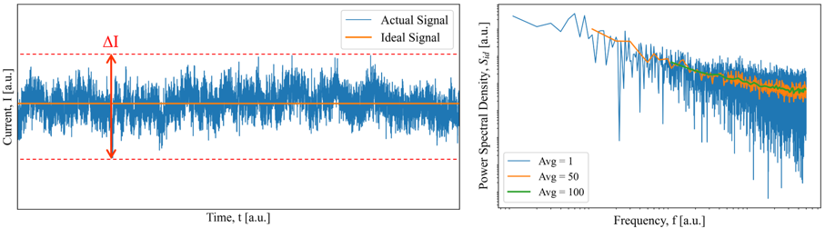
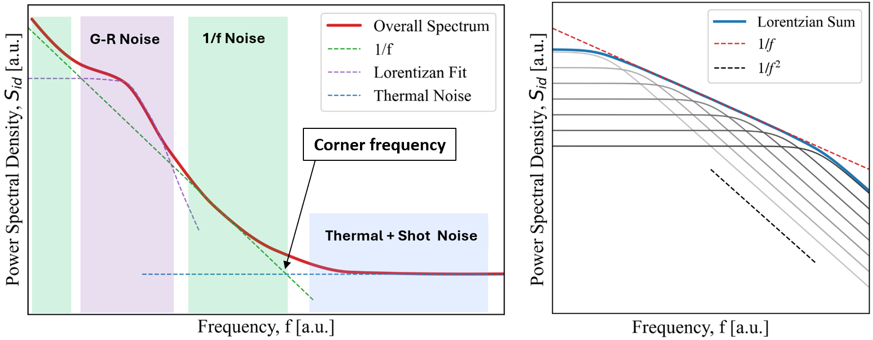

The Growing Impact of Low-Frequency Noise
As transistors scale into the nanometer regime, reduced carrier populations, smaller signal levels, and tighter noise margins make circuits increasingly sensitive to microscopic fluctuations. Low-frequency noise that was once negligible in larger devices can now significantly influence timing stability, analog precision, RF performance, and overall reliability. In nanoscale technologies, even a single defect or trapping event can become large enough to noticeably affect device behavior.
Electronic Fingerprint of Low-frequency Noise
In electronic devices, the term low-frequency noise (LFN) refers to electrical fluctuations that dominate the lower end of the frequency spectrum, typically ranging from a few millihertz to several kilohertz depending on the device and application. Unlike rapidly varying high-frequency noise processes, LFN originates from comparatively slow phenomena within the device itself, including defect-assisted carrier interactions, generation-recombination processes, and stochastic fluctuations associated with localized imperfections. LFN is intrinsic to devices and fundamentally different from externally coupled disturbances such as electromagnetic interference or environmental noise.
The current flowing through an electronic device is not perfectly constant. Instead, small random fluctuations can be observed by monitoring the current over time. While the time-domain signal reveals the presence of noise, it does not provide the full picture regarding the characteristic frequencies contributing to these fluctuations. The time-dependent current signal is transformed into the frequency domain using a Fast Fourier Transform (FFT), from which the power spectral density (PSD) is obtained. The PSD describes how the noise power is distributed over frequency and provides a direct fingerprint of the underlying noise mechanisms in the device. The noise power increases significantly toward lower frequencies, following approximately a 1/f dependence. For this reason, LFN is also generally referred to as 1/f noise or flicker noise.

The 1/f behavior is universally observed across a wide range of electronic components [1,2], including resistors, diodes, bipolar junction transistors (BJTs), metal–oxide–semiconductor field-effect transistors (MOSFETs), and other semiconductor devices, although the dominant origin of the noise may vary depending on the material system and transport mechanism involved.
Noise Components in Semiconductors
In semiconductor devices, the measured noise spectrum is rarely governed by a single mechanism over the entire frequency range. Instead, different physical processes dominate at different frequencies, giving rise to a characteristic spectrum. One important contribution arises from generation–recombination (G–R) noise, which originates from the trapping and de-trapping of charge carriers at localized defect states. In the frequency domain, such processes appear as Lorentzian-shaped features in the PSD, each characterized by a specific relaxation time constant. At very low frequencies, a distinct plateau is observed, after which the spectrum rolls off with a 1/f² dependence. The superposition of many Lorentzian spectra spanning a broad distribution of time constants can collectively produce the characteristic 1/f-like dependence. In addition, thermal and shot noise contribute a frequency-independent white-noise background.

Emergence of Random Telegraph Noise in Nanoscale Devices
For advanced semiconductor technologies, particularly in nanoscale MOSFETs, FinFETs, gate-all-around (GAA) transistors, and low-dimensional material systems, aggressive device scaling enhances the influence of individual defects on the electrical characteristics of the device. As a result, the dynamics of single charge traps can directly manifest in the measured current in the form of random telegraph noise (RTN). A typical RTN signal randomly switches between two discrete current levels over time. RTN can be understood as the discrete limit of G–R noise, arising when the activity of an individual defect or trap becomes sufficiently strong to directly modulate the device current.

More complex multi-level RTN behavior may also occur when multiple traps or interacting defect systems simultaneously influence the conduction channel. In such cases, the current fluctuates between several discrete states. A key characteristic of RTN is that the time constants of the active traps are typically of comparable magnitude, allowing the individual switching events to remain temporally distinguishable. In contrast, conventional 1/f noise emerges from the collective contribution of a very large number of traps with relaxation times distributed over several orders of magnitude. The superposition and averaging of these numerous fluctuators smear out the discrete switching signatures, resulting instead in the continuous 1/f-like spectrum.
The Two Schools Behind LFN
Despite decades of research, the microscopic origin of low-frequency noise (LFN) remains one of the most debated topics in semiconductor physics. Two major theories emerged to explain the characteristic 1/f behavior.
The most widely accepted model for MOS devices is the carrier number fluctuation (CNF) theory [1], where carriers are randomly captured and emitted by oxide or interface traps near the channel inversion region. These trapping events modulate the number of free carriers participating in conduction, leading to current fluctuations. The corresponding noise PSD follows the well-known relation:
where γ ≈ 1 for classical flicker noise emerging from the superposition of several traps.
The CNF theory cannot fully explain the presence of 1/f noise in homogeneous materials and resistors, where oxide trapping effects are negligible. An alternative explanation is provided by the carrier mobility fluctuation (CMF) theory by Hooge [4], which attributes LFN to variations in carrier mobility caused by scattering processes due to lattice vibrations, surface roughness, and crystal defects. Hooge proposed the empirical relation for the PSD as:
where I is the current, αH is Hooge’s parameter and N is the number of free carriers. The relation predicts that the relative noise increases as the carrier population decreases, explaining why LFN becomes increasingly important in aggressively scaled nanoscale devices.
For many years, the CNF and CMF theories were treated as competing explanations. However, modern experimental observations suggest that both mechanisms are often intrinsically linked. A trapped charge not only changes the carrier density in the channel but also influences the local electric field and scattering environment, thereby affecting carrier mobility simultaneously. This coupled behavior led to the concept of a unified correlated CMF/CNF theory [5]. Such correlated effects become particularly important in modern nanoscale devices, where even a single defect can significantly perturb the entire conductive channel.
Conclusion
Low-frequency noise represents one of the clearest examples of how atomic-scale defect dynamics can produce large-scale technological consequences. What begins as the trapping and release of one or few charge carriers can ultimately influence processor timing, communication reliability, sensor accuracy, device variability, and long-term operational stability. As semiconductor technologies continue to evolve toward increasingly scaled and complex nanoscale architectures, the relative importance of low-frequency noise will continue to grow, making its understanding essential for both device optimization and reliability engineering. Beyond being a performance limitation, low-frequency noise also serves as a powerful diagnostic window into the fundamental interactions between carriers, defects, and materials that ultimately govern the behavior of modern electronic devices.
References
- A. L. McWhorter, 1/f Noise and Germanium Surface Properties, Semiconductor Surface Physics, University of Pennsylvania, 1957.
- P. Dutta and P. M. Horn, “Low-frequency fluctuations in solids: 1/f noise,” Rev. Mod. Phys., vol. 53, no. 3, pp. 497–516, Jul. 1981.
- M. J. Uren, D. J. Day, and M. J. Kirton, “1/f and random telegraph noise in silicon metal-oxide-semiconductor field-effect transistors,” Appl. Phys. Lett., vol. 47, no. 11, pp. 1195–1197, 1985.
- F. N. Hooge, “1/f Noise Sources,” IEEE Transactions on Electron Devices, vol. 41, no. 11, pp. 1926–1935, 1994.
- K. K. Hung et al., “A unified model for the flicker noise in metal-oxide-semiconductor field-effect transistors,” IEEE Transactions on Electron Devices, vol. 37, no. 3, pp. 654–665, 1990.